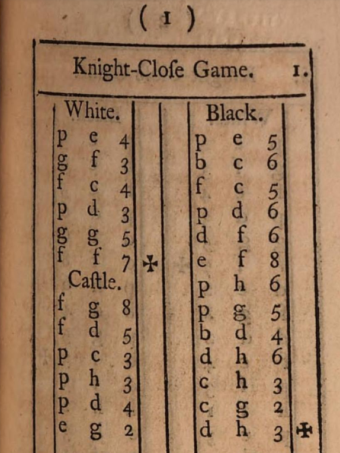

Stamma
En liten berättelse om hur övergången från deskriptiv notation till algebraisk gick till.
Samt ett litet feltänk av Stamma som kanske ledde till att hans förslag inte accepterades till 100%.

Phillip Stamma (Aleppo 1705-1755) konstruerade föregångaren till den algebraiska notation vi använder idag.
Han gav 1737 ut boken The Noble Game of Chess på franska, där denna nya notation publicerades för första gången.
Den engelska upplagan är tämligen lättläst.
Om f inte passar i sammanhanget, använd s istället. T ex chefs blir då chess.
Om man hoppar över partierna, läser man hela boken på en timme.
Så här ser bokens första parti ut:

Som synes används
* p för alla bönder
* a för torn på a
* b för springare på b
* c för löpare på c
* d för dam på d
* e för kung på e
* f för löpare på f
* g för springare på g
* h för torn på h
Ett problem är att man måste märka springarna med b eller g på undersidan för att veta vilken springare det handlar om.
T ex draget gg5. Det är inte enkelt att komma ihåg springarnas utgångspositioner.
Det är egentligen bara ett problem när två springare kan gå till samma ruta.
Någon symbol för slag användes ej.
Både versaler och gemener förekommer. Både för att indikera pjäs och kolumn.
K kan ses ibland som alternativ till E
I Algebraisk notation ser man ibland Nbd2, vilket anger vilken springare som flyttas.
I Stammas notation anges detta istället bd2 eller gd2 beroende på var springaren stod ursprungligen.
Framgår inte hur Stamma hanterade bönder som går i dam. Vilken bokstav ska damen få? Däremot klarar Stamma både Nbd5 och N3d5.
En fördel med Stammas notation är att den är internationell.
a-h är ju mera internationella än KQBNR eller KDLST.
Den förhärskande notationen vid denna tid var den deskriptiva.
Notera att två bokstäver, behövs istf en. T ex QR för tornet på a-linjen.
Dessutom numrerar svart raderna tvärtom gentemot vit, vilket Stamma inte gör.
I USA använde man ofta Kt istället för N fram till 1980.


Byrne - Fischer 1956:

Först 1980 bestämde FIDE att algebraisk notation skulle bli standard.
Historik
| land | år |
|---|---|
| Stammas bok | 1737 |
| Tyskland | 1840-talet |
| Österrike | 1840-talet |
| Sovjet | 1920-talet |
| Sverige | 1970-talet |
| USA | 1990 |
| Frankrike | 1993 |
Frankrike gick sist av alla över, 1993, 256 år efter att Stammas bok gavs ut i just det landet.
Notationens utveckling från deskriptiv till algebraisk
1614: The white king commands his owne knight into the third house before his owne bishop.
1750: K. knight to His Bishop's 3d.
1837: K.Kt. to B.third sq.
1848: K.Kt. to B's 3rd.
1859: K. Kt. to B. 3d.
1874: K Kt to B3
1889: KKt-B3
1904: Kt-KB3
1946: N-KB3
1960: Ng1-f3
1970: Nf3